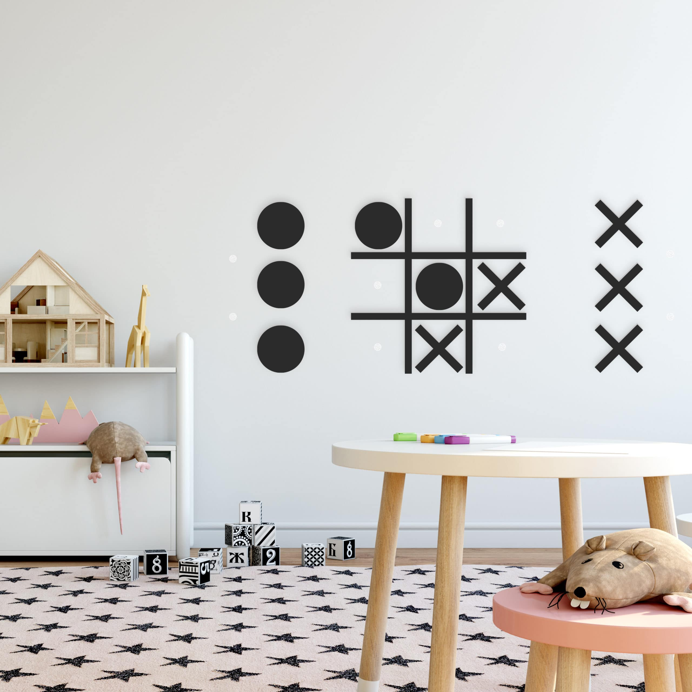
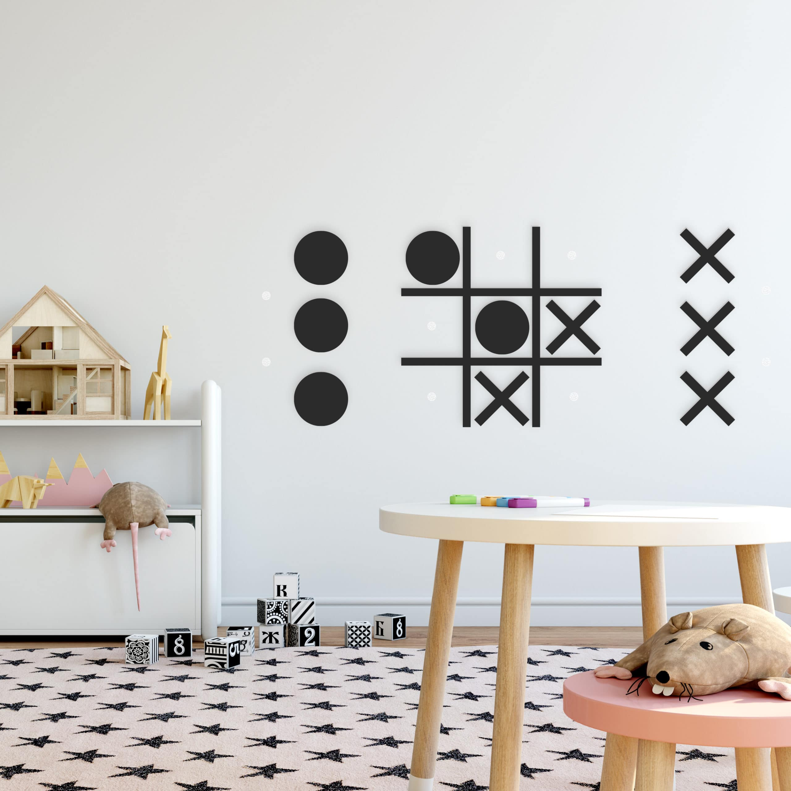
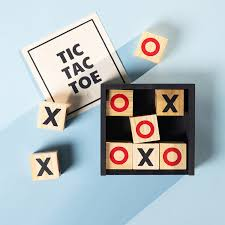
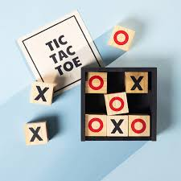

Про мене
Привіт. Мене звати Вікторія. Я Junior Frontend Developer. Ця сторінка створена на курсі Prometheus "Frontend. Базовий курс від Ciklum" щоб закріпити отримані знання з HTML, CSS та JS.
Про міні-гру "Хрестики-нулики"
Хрестики-нулики (англ. tic-tac-toe) — гра на папері для двох гравців. На кожному ході гравці мають ставити O чи X на ґратці розміром 3 на 3. Гравець, який першим поставив три однакових знаки в горизонтальному, вертикальному чи діагональному ряду, виграє партію.
Історія
В ранній варіант хрестиків-нуликів грали в Римській імперії, приблизно в першому столітті до нашої ери
під назвою «Terni Lapilli» (Терні Лапілі). Гра мала відмінності: замість того, щоб мати будь-яку
кількість знаків, у кожного гравця було всього три, таким чином, вони повинні були переміщувати їх у
порожньому просторі, щоб продовжувати грати. Сітки з маркованною крейдяною грою були знайдені по всьому
Риму. Однак, за словами Клаудії Заславської, за її книгою Tic Tac Toe: And Other Three-In-A Row Games
from Ancient Egypt to the Modern Computer («Хрестики-нулики: та інші ігри три-в-ряд від стародавнього
Єгипту до сучасного комп'ютера»), хрестики-нулики могли виникнути ще в Стародавньому Єгипті. Інша тісно
пов'язана стародавня гра — Three Men's Morris, в яку також грали на простій сітці і, яка вимагає три
знаки в ряд, щоб закінчити. Різні назви гри з'явилися недавно.
Перша згадка в пресі британської назви «Noughts and crosses» з'явилася в 1864 році. У своєму романі «Can You Forgive Her» Ентоні Троллоп вказує на клерка, який грає в «tit-tat-toe». Перша згадка в пресі гри під назвою «tick-tack-toe» з'явилася в 1884 році, але стосується «дитячої настільної гри, в яку грають на дошці, та яка полягає у спробах із закритими очима поставити олівець на одному з чисел набору; попадання зараховуються в очки». «Tic-tac-toe» можливо з'явилися від «tick-tack», старої версії назви гри в нарди, вперше згаданої в 1558 році. Перейменування Noughts and crosses на Tic-tac-toe в США сталася в 20 столітті. У 1952 році, OXO (або Noughts and Crosses) для комп'ютера EDSAC стала однією з перших відомих відео ігор. Гравець може грати в хрестики-нулики проти людини. 1975 року хрестики-нулики були також використані студентами MIT, щоб продемонструвати обчислювальну потужність елементів Лего. Комп'ютер Лего, зроблений з (майже) тільки Tinkertoys, вміє чудово грати в хрестики-нулики. Він в даний час експонується в Музеї науки в Бостоні.
Міні-гра
Галерея
 

 

Напишіть мені
Якщо вам сподобалась розробка цього проекту, маєте пропозиції щодо покращення чи виправлення помилок, хочете найняти мене на роботу, відправте свої дані та повідомлення через форму зворотного зв'язку. Я обов'язково з вами зв'яжусь для уточнення всіх деталей.